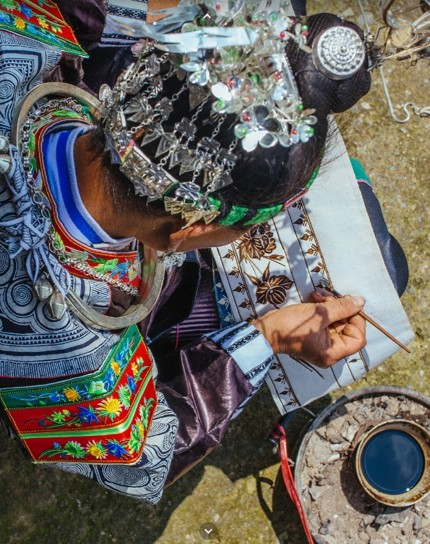

据史书记载，早在秦汉时期，甚至更早，苗族人民就已经掌握了蜡染技艺，当时称之为"阑干斑"，是古代苗族人民用来抵御严寒而制作的一种防寒用品。

随着社会的发展，苗族人民不再仅仅满足于将蜡染用于简单的生活用品制作，在生活的不断探索中，纹样不断增多，装饰作用越来越突出，于是苗族蜡染逐渐演变为具有民族特色的艺术表现形式。苗族蜡染不仅是苗族人民日常生活的重要组成部分，也是他们表达情感、寄托希望的重要载体，代表着民间艺人的勤劳与智慧，被誉为"穿在身上的史书"。